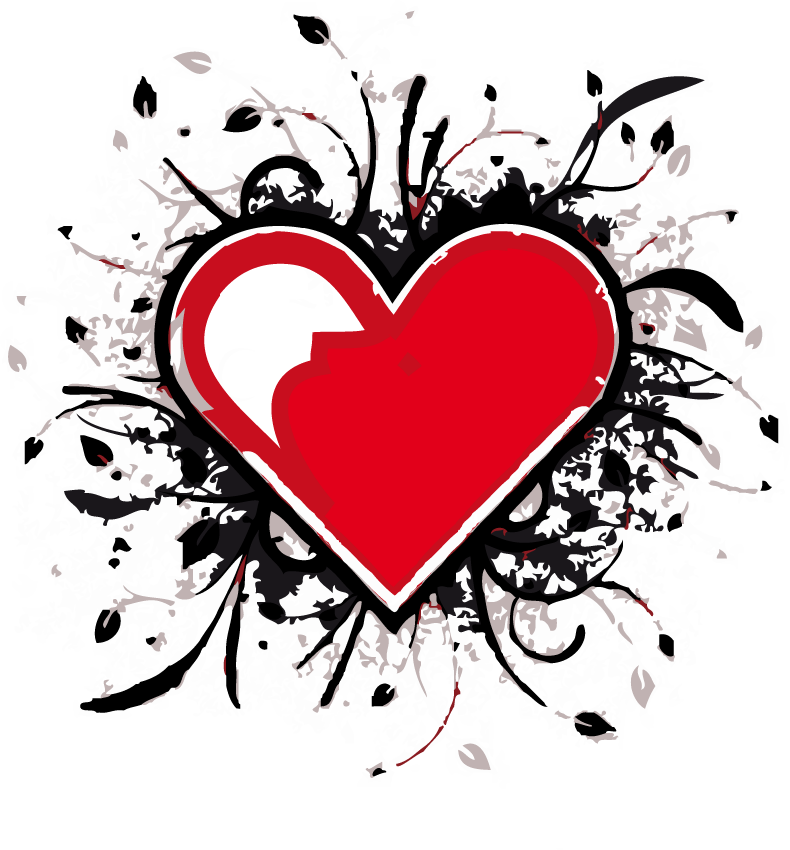

<style type="text/css">
#top h2.animated
{
	-moz-animation-delay: 0s;
	-webkit-animation-delay: 0s;
	-o-animation-delay: 0s;
	margin-bottom: 1em;
}

#top img.animated
{
	-moz-animation-delay: 1.5s;
	-webkit-animation-delay: 1.5s;
	-o-animation-delay: 1.5s;
}

#top p.animated
{
	-moz-animation-delay: 1.5s;
	-webkit-animation-delay: 1.5s;
	-o-animation-delay: 1.5s;
}
</style>
<section id="top" class="one">
	<h2 class"animated slide">Mon amour</h2>
	
	<p class="animated fadeInDown" style="max-width: 50%; margin: auto">Charlène je t'aime très fort et je voulais m'excuser de t'avoir fait une mauvaise blague avec mon mail. Je te promets de ne plus t'envoyer ce genre de messages, c'était cruel et pas vraiment drôle. Je suis désolé mon petit coeur et j'espère qu'on pourra malgré tout passer une bonne soirée ensemble.</p>
</section>

<script type="text/javascript">
$(function () {
	setTimeout(function () { console.log( "hello" ); $('#top img').animate({ opacity: 1 }, 500); }, 1500);
});
</script>
